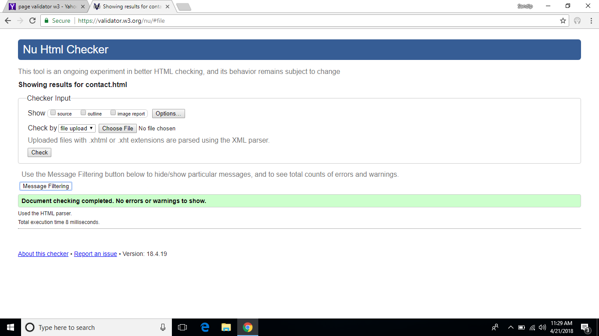
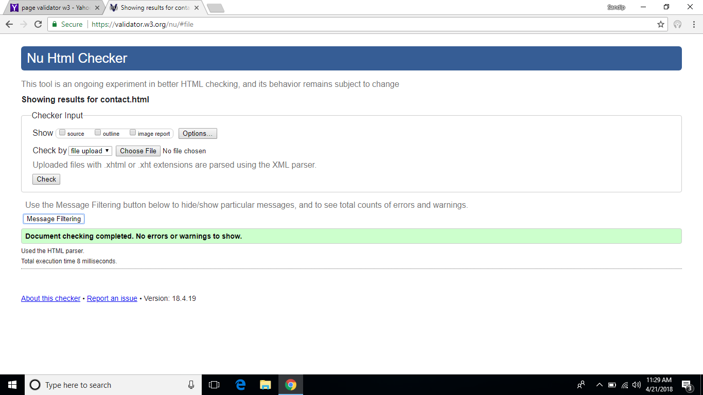

Introduction And Group Work
I have choosen this website because this website is user friendly and simple yet attractive. The color combination is also good and the navigations are also simple. This web site is friendly because background is simple and attractive and also design are lot easy to understand. My choice was to build a simple website and everone can easily code the website and get output and should grab the attention of everyone.i have choosen to add picture in my home page describing myself.in the contact section i have choosen to add form and location of my place and also i have added table of my choice in my personal c.v. section.
Similarly from the team work i get to choose what is best for my website. They have helped me to choose the background and font size and color. Likewise from the team work i have also found others wayto code and get the similar output. they taught me how to add tables of my choice.Similarly they helped me making my webpages responsive. However there were many problem when working together. We used to have common ideas and concept. There were to much ideas and no execution and cannot pick the correct code. In groups we used to have common codes and someone have to change whole code.
If i got more time i would have added more animation in my web site. likeise i would have made it more responsive and have added more content in my web pages.
My Experience In Web class
Our web development class was of 12 weeks and it has had a huge effect towards my thinking. At first i think web designing was hard but it was not as hard as i used to think. When i first joined and started taking class it was hard and i cannot do simple web design because i was uncomfortable and scared but as time passed my interest grew back and now web designing has become easy to do.
When i first joined the class i didnot understand a thing because it was different than i used to do and i cannot understand the new codes. As time passed i learned maney things like how to put correct padding and correct margins and how to add font size and others. similarly from the lecture and tutroials class i have learned how to 2d animation and also 3d animation. i have also learned how to add images and resize them. Likewise i have also learned how to do transformation and transition. And with the help of transformation i have learned how to raotate object and make them move from one place to another.
During this 3 month course i have learned how to use css properties and also some css3 properties. likewise i have also learned how to make classes and how to use flex and float point properties in the css. similarly i have also learned about making div. container and use them. And then i have also learned how to add background images and use rgb color combination.
This only happened because of the fact that the techers and friends are friendly and are a lot helpful. They have played an important role in making me understand all the codes that were taught in our lecture session and they have also helped me correct my mistake my code and errors on my code. So this was my experience till now in web development class.
These are some reference websites
These are wireframes
Home
This is the landing page of my web site.
About
This is the about me page wireframe you can see about myself in here.
Contact
This is the contact page and there is forms where you can fill and submit to me.
CV
This is My personal CV page.
Social
This is the page where you can find all my social media links
Models_gp
This is the final page where report of my work is given.
 

Validation of the page